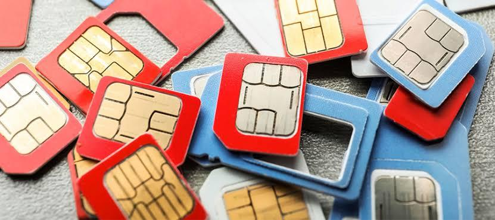

U.S OR U.K PHONE NUMBER? The Importance of Both

Moving to the UK brings an endless to-do list, but sorting out your cell phone plan before leaving the U.S is very important. Waiting until you touch down at your new duty station in the UK will severely limit your options and may leave
you in a stressful digital limbo.
While keeping your current U.S. service active sounds like the easiest path, it usually comes with a staggering monthly price tag, and many domestic carriers
will cut your service entirely after a few months of continuous overseas roaming. On the flip side, simply canceling your plan and leaving your American
phone number behind creates a massive headache. You will quickly find yourself locked out of your life back home, as most U.S. banks, streaming services, and secure websites strictly require two-factor authentication codes sent to an American number—completely refusing to transmit verification texts to a new British line. Fortunately, you do not have to choose between a massive
phone bill and losing access to your accounts. There are highly effective, low-cost workarounds to keep your U.S. identity intact, and we have rounded up
the absolute best recommendations to keep you connected seamlessly.
Why Dual SIM is a Game-Changer for Your UK Move
Staying connected to both worlds is crucial when you move overseas, and a dual-SIM
phone is the ultimate solution for members stationed overseas. This feature allows your
device to hold two active phone numbers simultaneously. Some phones use two
physical SIM cards, while newer models rely entirely on digital eSIMs. Without a
dual-SIM phone, you are forced to make a frustrating choice: keep your US number for
banking alerts, verification codes, and family back home, or swap it out entirely for a UK
number to handle local housing, utilities, and commands. A dual-SIM phone removes
that headache completely, letting you call, text, and use data on both networks from a
single device.
Keeping Your U.S Number
For those who decide that keeping an active American line is a priority, many members in our unit found success by switching to Google Fi Wireless before making the move overseas. Google Fi offers a dedicated military exception that provides full, long-term coverage for service members stationed overseas without the risk of data suspension. However, there are two crucial details you must keep in mind if you choose this route:
are still physically located in the United States. If you wait until you arrive in the UK, the international roaming features will not function properly for a prolonged period. ● Premium Plan Restriction: Only their highest-tier plan qualifies for this extended
international military benefit. As of 2026, this Unlimited Plus deal costs approximately $65 per month for a single line, though the price per person drops if you set up a multi-line family plan.
If you are looking for a FREE workaround to keep your digital identity alive, another excellent option is transferring your U.S. phone number over to Google Voice. This service is completely free, allows you to permanently preserve your American number, and lets you make calls or send texts back to the states over a Wi-Fi connection.
However, just like the Google Fi option, your Google Voice profile must be fully set up and activated while you are still in the United States. If you do not pull the trigger on
either of these phone plans before your flight takes off, you will completely lose these two options once you land in the UK.
There are other options available through different carriers. We highly recommend that you reach out to your current carrier to see what options they offer before you make your move to the UK. It is much easier to make this decision while you are still stateside than to try to figure it out once you arrive.
UK Mobile Phone Plans
The Budget-Friendly Options
1. Giffgaff (Favorite Option)
SIM card dispatched to a UK address. “Order your free SIM before 5.00pm to get
next day delivery.” as noted on giffgaff. Alternatively, you can skip physical mail
entirely: download the app, select your monthly plan, and instantly download a
digital eSIM right to your device. This is ideal for same-day, in-country use the
minute families step off the plane.
2. SMARTY
mail.
massive data packages with no minimum contract commitments.
3. VOXI
their digital option. By using the online checkout, you receive a setup email with a
use apps like Instagram, WhatsApp, and Facebook without eating into your
monthly data allowance.
The Bigger Premium Companies
4. EE (Everything Everywhere)
across rural Suffolk, making it highly reliable for families living off-base in smaller
villages.
12-to-24-month contract commitments.
5. Vodafone
locales, alongside robust global roaming features for families who plan to travel
around Europe during their tour.
contract to lock in the best monthly rates.
Keep the original guide.
Download the PDF version exported directly from the Google Doc.